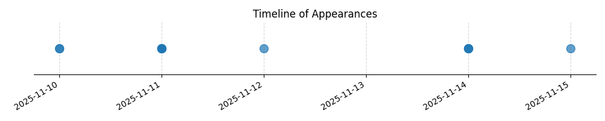

Kategorie: Letecké předpisy
Otázka se týká pravidel a povolení pro použití plochy pro vzlet nebo přistání sportovních létajících zařízení. Toto spadá pod oblast leteckých předpisů, které upravují provoz a podmínky pro vzlety a přistání. Odpověď C je správná, protože obecně platí, že pro použití jakékoli soukromé nebo neveřejné plochy pro vzlet či přistání je nutný výslovný souhlas jejího vlastníka, bez ohledu na to, zda je plocha mimo obytné území nebo zda byl provoz oznámen místnímu úřadu. Tyto úkony jsou regulovány leteckými zákony a předpisy, které chrání vlastnická práva a zajišťují bezpečnost provozu.

| Datum výskytu |
|---|
| 2025-11-15 |
| 2025-11-14 |
| 2025-11-12 |
| 2025-11-11 |
| 2025-11-10 |